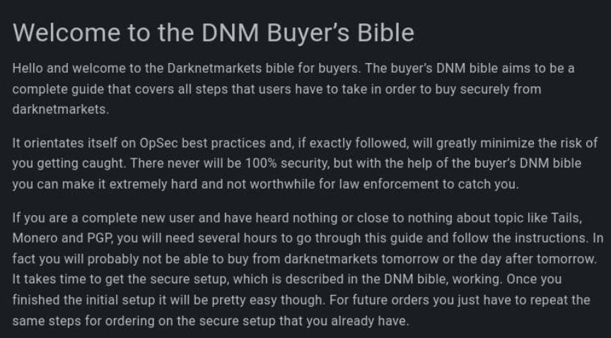
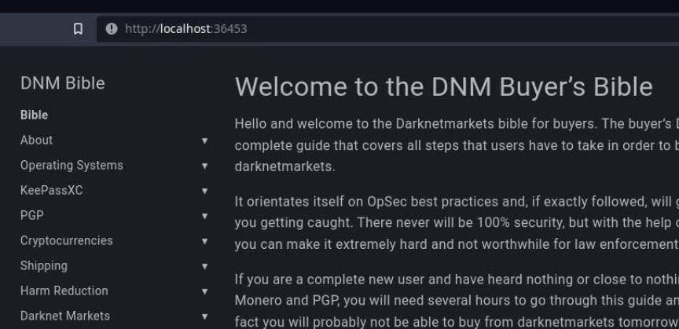
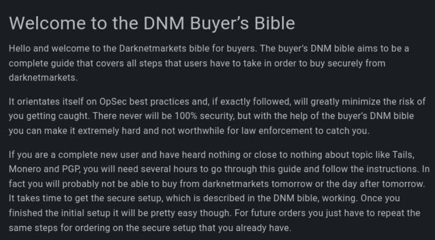
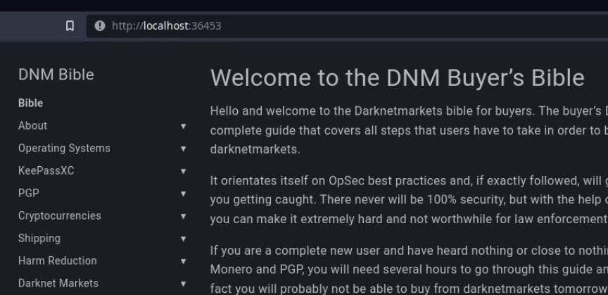

DNM Bible Has Been Updated - Shakybeats
~2 min read | Published on 2022-09-13, tagged DNM-Bible using 270 words.
Shakybeats announced the release of an update to the new version of the DNM Bible. Although called the DNM Bible, the book or website is useful even for people uninterested in using darknet marketplaces.
<code>dreadytofatroptsdj6io7l3xptbet6onoyno2yv7jicoxknyazubrad.onion/post/79602af75d5e466833d1</code>

The list of updates and changes includes:
Whonix has gotten a big overhaul. You can now view most of the main section in Tails or Whonix. Meaning in the PGP chapter it will show you how to do it in Tails or you can click the Whonix tab and view how to use GPA. PGP section has been updated to Kleopatra for Tails, and GPA for Whonix. Gajim+Omemo guide has been added! Backing up now includes the backup utility.* I2P has been added! You can now download the files for I2P from Dread! Special thanks to /u/DeSnake for this, and allowing Dread to host the files. How to verify an onion chapter now encourages users to compare pgp keys with multiple trusted sources. Broken Links for Local Monero and installing Tails from Windows have been fixed. Along with other broken onions. /u/SocietalActivities has been added to the harm reduction section /u/tordottaxi added to the Resources area. The source code to the Hugo site is available @ this repo: <code>4ipov6i23aan75z664a2qc57davfwtxulhsi3ttefifrbersbasj7wqd.onion/DNM/Bible</code>

Users can easily host their own version of the DNM Bible using Hugo. If users want to host the DNM Bible for themselves, they do not even need a server. Hugo has a built in webserver. If users want to share it with others, you will need a server.
Shakybeats recommends nginx.
P.S., from Paris:
Shakybeats hosts the DNM Bible as an onion service here:
<code>biblemeowimkh3utujmhm6oh2oeb3ubjw2lpgeq3lahrfr2l6ev6zgyd.onion/</code>
<code>dreadytofatroptsdj6io7l3xptbet6onoyno2yv7jicoxknyazubrad.onion/post/79602af75d5e466833d1</code>

The introductory section for the DNM Bible
The list of updates and changes includes:

Users can easily host their own version of the DNM Bible using Hugo. If users want to host the DNM Bible for themselves, they do not even need a server. Hugo has a built in webserver. If users want to share it with others, you will need a server.
Shakybeats recommends nginx.
P.S., from Paris:
Shakybeats hosts the DNM Bible as an onion service here:
<code>biblemeowimkh3utujmhm6oh2oeb3ubjw2lpgeq3lahrfr2l6ev6zgyd.onion/</code>